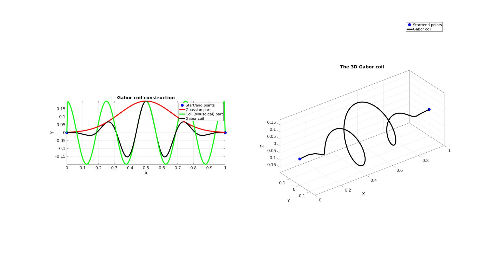
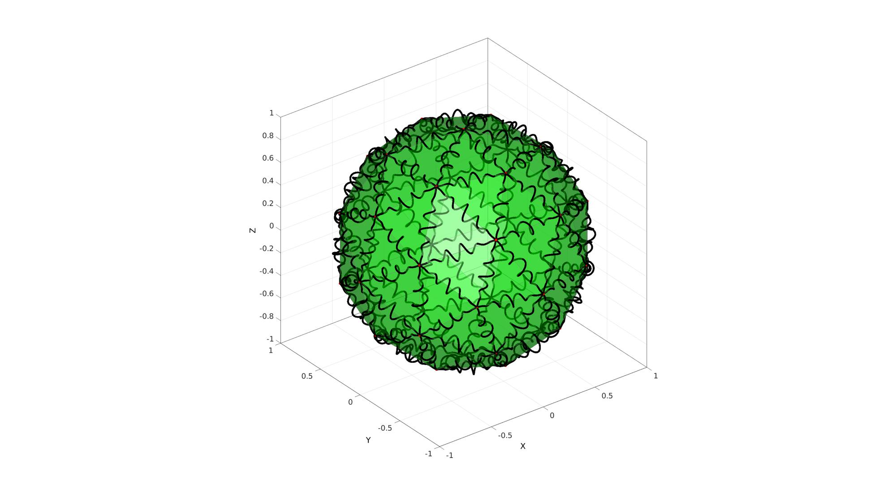

gaborCoil
Below is a demonstration of the features of the gaborCoil function
Contents
clear; close all; clc;
Syntax
[V_coil_rep]=gaborCoil(varargin);
Description
This function generates a so-called Gabor coil, i.e. a spiral which is modulated similar to a Gabor filter.
Examples
Creating a single Gabor coil
V=[0 0 0; 1 0 0]; E=[1 2]; %Create a gabor coil optionStruct.numSteps=150; %Number of points used to define the curve. optionStruct.numTwist=4; %Number of twists (for an unmodulated coil) optionStruct.coilAmplitude=[]; %The coil amplitude (set empty to based on curve or edge length instead) optionStruct.coilAmplitudeFactor=1/5; %The factor used to set local coil amplitude as a function of edge length optionStruct.f=3; % The Gaussian bell curve will be truncated at n*the standard deviation on both sides. optionStruct.funcMethod=2; %For loop based (1) or vectorised (2). V_gabor_coil=gaborCoil(V,E,optionStruct); %Get pure Gaussian part for illustration optionStruct.numSteps=150; %Number of points used to define the curve. optionStruct.numTwist=0; %Number of twists (for an unmodulated coil) optionStruct.coilAmplitude=[]; %The coil amplitude (set empty to based on curve or edge length instead) optionStruct.coilAmplitudeFactor=1/5; %The factor used to set local coil amplitude as a function of edge length optionStruct.f=3; % The Gaussian bell curve will be truncated at n*the standard deviation on both sides. optionStruct.funcMethod=2; %For loop based (1) or vectorised (2). V_gauss=gaborCoil(V,E,optionStruct); %Get pure coil part for illustration optionStruct.numSteps=150; %Number of points used to define the curve. optionStruct.numTwist=4; %Number of twists (for an unmodulated coil) optionStruct.coilAmplitude=[]; %The coil amplitude (set empty to based on curve or edge length instead) optionStruct.coilAmplitudeFactor=1/5; %The factor used to set local coil amplitude as a function of edge length optionStruct.f=0; % The Gaussian bell curve will be truncated at n*the standard deviation on both sides. optionStruct.funcMethod=2; %For loop based (1) or vectorised (2). V_coil=gaborCoil(V,E,optionStruct);
Visualizing coil curve
cFigure; subplot(1,2,1); title('Gabor coil construction'); hold on; hp(1)=plotV(V,'b.','markerSize',50); hp(2)=plotV(V_gauss,'r-','LineWidth',5); hp(3)=plotV(V_coil,'g-','LineWidth',5); hp(4)=plotV(V_gabor_coil,'k-','LineWidth',5); legend(hp,'Start/end points','Guassian part','Coil (sinusoidal) part','Gabor coil'); axisGeom; view(2); subplot(1,2,2); title('The 3D Gabor coil'); hold on; hp2(1)=plotV(V,'b.','markerSize',50); hp2(2)=plotV(V_gabor_coil,'k-','LineWidth',5); legend(hp2,'Start/end points','Gabor coil'); axisGeom; drawnow;
Creating Gabor coil on all edges in mesh
Creating example patch data
[F,V]=geoSphere(1,1);
% [F,V]=stanford_bunny;
Get patch edges
E=patchEdges(F,1);
optionStruct.numSteps=150; %Number of points used to define the curve. optionStruct.numTwist=5; %Number of twists (for an unmodulated coil) optionStruct.coilAmplitude=[]; %The coil amplitude (set empty to based on curve or edge length instead) optionStruct.coilAmplitudeFactor=1/10; %The factor used to set local coil amplitude as a function of edge length optionStruct.f=3; % The Gaussian bell curve will be truncated at n*the standard deviation on both sides. optionStruct.funcMethod=2; %For loop based (1) or vectorised (2). [V_coil_rep]=gaborCoil(V,E,optionStruct);
cFigure; hold on; gpatch(F,V,'g',0.5*ones(1,3),0.5); plotV(V,'r.','MarkerSize',25); axisGeom; camlight headlight; for q=1:1:size(V_coil_rep,3) plotV(V_coil_rep(:,:,q),'k-','lineWidth',5); end drawnow;

GIBBON www.gibboncode.org
Kevin Mattheus Moerman, gibbon.toolbox@gmail.com
GIBBON footer text
License: https://github.com/gibbonCode/GIBBON/blob/master/LICENSE
GIBBON: The Geometry and Image-based Bioengineering add-On. A toolbox for image segmentation, image-based modeling, meshing, and finite element analysis.
Copyright (C) 2019 Kevin Mattheus Moerman
This program is free software: you can redistribute it and/or modify it under the terms of the GNU General Public License as published by the Free Software Foundation, either version 3 of the License, or (at your option) any later version.
This program is distributed in the hope that it will be useful, but WITHOUT ANY WARRANTY; without even the implied warranty of MERCHANTABILITY or FITNESS FOR A PARTICULAR PURPOSE. See the GNU General Public License for more details.
You should have received a copy of the GNU General Public License along with this program. If not, see http://www.gnu.org/licenses/.